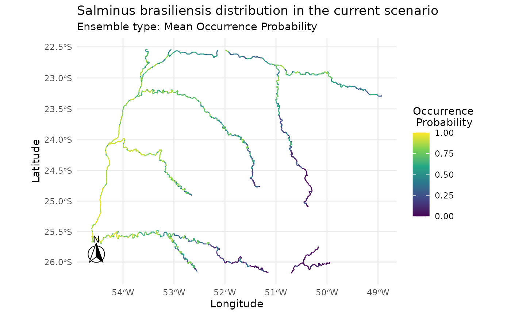

Modeling Species Distributions in Continental Water Bodies
Source:vignettes/articles/Salminus.Rmd
Salminus.RmdIntroduction
caretSDM is a R package that uses the powerful
caret package as the main engine to obtain Species
Distribution Models. One of its main attributes is the strong
geoprocessing underlying its functions provided by stars
package. Here we show how to model species distributions using
caretSDM through the function sdm_area with
lines as predictor variables. We will also show how to apply a VIF
routine in predictors and scenarios to avoid multicolinearity. The aim
of this modeling will be to obtain the current and future distribution
of Salminus brasiliensis, a key fish species from South
Brazil.
First, we need to open our library.
Pre-Processing
To obtain models, we will need climatic data and species records. To
easily obtain these data, we have two functions:
WorldClim_data function downloads climatic variables from
WorldClim 2.1, a widely used open-source database; in the same way,
GBIF_data function downloads species records from GBIF,
also a widely used open-source database. You can read more about them by
running in the console ?GBIF_data and
?WorldClim_data.
Obtaining species records
A easy way to get species data using caretSDM is the
function GBIF_data, which retrieves species records from
GBIF. Understandably, there are other sources of species data available,
as well as our own data that can be the result of field work. In this
sense, one can import to R it’s own data in multiple ways, but be sure
that the table must always have three columns: species, decimalLongitude
and decimalLatitude. GBIF_data function can retrieve the
data ready to be included in caretSDM, thus if you have any doubt on how
to format your own data, use GBIF_data function with the
parameter as_df = TRUE to retrieve an example table. As
standard, GBIF_data function sets
as_df = FALSE, which makes the function return a
occurrences object (more about that further below). An
example code for this step would be:
But we already have a salm object included in the
package, which is the same output, but with filtered records to match
our study area. Note that coordinates are in a metric CRS (EPSG:
6933).
salm |> head()
#> species decimalLongitude decimalLatitude
#> 1 Salminus brasiliensis -5002956 -3034581
#> 2 Salminus brasiliensis -5123570 -3049429
#> 3 Salminus brasiliensis -5138591 -2830253
#> 4 Salminus brasiliensis -5263273 -3143263
#> 5 Salminus brasiliensis -5172118 -3156734
#> 6 Salminus brasiliensis -5172118 -3156734Obtaining climatic data
For climatic data, we will first download and import current data,
which is used to build the models. WorldClim_data function
has an argument to set the directory in which you want to save the
files. If you don’t set it, files will be saved in your working
directory (run getwd() to find out your working directory)
in the folder “input_data/WorldClim_data_current/”. If period is set to
“future”, then it is saved in “input_data/WorldClim_data_future/”. We
could run this script with a smaller resolution, but as the aim here is
to show how the package works, we will use a resolution of 10
arc-minutes, which is very coarse, but quicker to download and run.
# Download current bioclimatic variables
WorldClim_data(path = NULL,
period = "current",
variable = "bioc",
resolution = 10)
# Import current bioclimatic variables to R
bioc <- read_stars(list.files("input_data/WorldClim_data_current/", full.names = T), along = "band", normalize_path = F)As in the previous section, we already have a bioc
object included in the package, which is the same output, but masked to
match our study area and with fewer variables.
bioc
#> stars object with 3 dimensions and 1 attribute
#> attribute(s):
#> Min. 1st Qu. Median Mean 3rd Qu. Max. NA's
#> current 14.58698 21.19678 298.9147 622.9417 1353.5 2368 1845
#> dimension(s):
#> from to offset delta refsys point values x/y
#> x 747 798 -180 0.1667 WGS 84 FALSE NULL [x]
#> y 670 706 90 -0.1667 WGS 84 FALSE NULL [y]
#> band 1 3 NA NA NA NA bio1 , bio4 , bio12Defining the study area
A important step on model building in Species Distribution Models, is
the definition of accessible area (the M in BAM diagram). This area can
be, in Geographical Information Systems terms, as an example, the
delimitation of a habitat (polygon) or a river basin network (lines).
Another broadly used approach is the use of buffers around presences.
The buffer size translates the potential distribution capabilities of a
species. To educational purposes, we will use a simple polygon of Parana
state river network that is available in caretSDM as the
rivs object (see ?rivs for more information on
the data)..
rivs
#> Simple feature collection with 1031 features and 2 fields
#> Geometry type: LINESTRING
#> Dimension: XY
#> Bounding box: xmin: -54.61834 ymin: -26.28958 xmax: -48.68542 ymax: -22.53484
#> Geodetic CRS: WGS 84
#> First 10 features:
#> LENGTH_KM DIST_DN_KM geometry
#> 1 7.31 2189.9 LINESTRING (-53.52234 -22.5...
#> 2 4.21 2186.2 LINESTRING (-53.05304 -22.5...
#> 3 2.14 2200.3 LINESTRING (-52.92292 -22.5...
#> 4 3.45 2186.7 LINESTRING (-53.54792 -22.5...
#> 5 1.26 2184.9 LINESTRING (-53.07708 -22.5...
#> 6 3.75 2302.6 LINESTRING (-52.14375 -22.5...
#> 7 2.12 2202.7 LINESTRING (-52.90625 -22.5...
#> 8 2.54 2183.9 LINESTRING (-53.55625 -22.5...
#> 9 4.89 2195.6 LINESTRING (-52.94375 -22.5...
#> 10 11.24 2320.3 LINESTRING (-51.93542 -22.5...
rivs |> select_predictors(LENGTH_KM) |> plot()
The sdm_area function is responsible to create a grid to
build models, a key aspect of caretSDM workflow. With a grid built,
modelers can pass multiple rasters with different resolutions, CRSs and
extents. The package will be responsible to rescale, transform and crop
every raster to match the grid. The grid returned by the
sdm_area function is from sdm_area class, a
class that will also keep the environmental/climatic data (i.e.
“predictor variables”, “covariates”, “explanatory variables”, “features”
or “control variables”). With this class we will perform analysis using
only the predictors. The grid is built using mostly the first three
arguments: (1) a shape from sf class, but rasters from
stars, rasterStack or SpatRaster
class are also allowed; (2) the cell size of the grid; and (3) the
Coordinate Reference System (CRS). Note that the cell size can be metric
or not depending on the CRS informed. It is important to inform a cell
size bigger than the coarser raster that will be used, otherwise
rescaling process may return empty cells. The rescaling can be performed
using GDAL (quicker but less precise) or the stars package
(slower but more precise). The first will address values to cells by
calculating the mean (for continuous variables) or the median (for
categorical variables) of the values falling within the cell. The
approach using stars will do the same thing, but weighting
for the area of each value within the cell. However, as we are using a
river network as study area, i.e. a simple features object with
LINESTRING as geometry types, we can set the argument
lines_as_sdm_area = TRUE. This will chop lines within
rivs (hydrological predictors) given the grid cells built.
In other words, if a segment of line holds a hydrological information,
but crosses between two different cells, it will be splitted in two
different lines both with the same hydrological data, but different
bioclimatic data. The use of lines_as_sdm_area = TRUE takes
more time to run, but is very precise for continental water bodies
modeling. For other arguments meaning see ?sdm_area.
sa <- sdm_area(rivs,
cell_size = 25000,
crs = 6933,
variables_selected = NULL,
gdal = TRUE,
crop_by = NULL,
lines_as_sdm_area = TRUE)
#> ! Making grid over study area is an expensive task. Please, be patient!
#> ℹ Using GDAL to make the grid and resample the variables.
#> Linking to GEOS 3.12.1, GDAL 3.8.4, PROJ 9.4.0; sf_use_s2() is TRUE
sa
#> caretSDM
#> ...........................
#> Class : sdm_area
#> Extent : -5269921 -3240236 -4697475 -2803134 (xmin, xmax, ymin, ymax)
#> CRS : EPSG:6933
#> Resolution : (25000, 25000) (x, y)
#> Number of Predictors : 2
#> Predictors Names : LENGTH_KM, DIST_DN_KMNote that the function returned two predictor variables
(Predictor Names above). These “predictors” are actually
columns included in the rivs shape’s data table. One can
filter these variables using select_predictors function,
but we will not do that here, because these variables represent
important predictor variables that will be used to model species
distribution. You can explore the grid generated and stored in the
sdm_area object using the functions
mapview_grid() or plot_grid(). Note that the
function used here is the same to plot grids and lines.
plot_grid(sa)
Now that we have a study area, we can assign predictor variables to
it. To do that, we use the add_predictors function, which
usually will only use the fist two arguments, which are the
sdm_area build in the previous step and the
RasterStack, SpatRaster or stars
object with predictors data. Note that add_predictors also
has a gdal argument, which works as the previous one in
sdm_area function.
sa <- add_predictors(sa,
bioc,
variables_selected = NULL,
gdal = TRUE) |> suppressWarnings()
#> ! Making grid over the study area is an expensive task. Please, be patient!
#> ℹ Using GDAL to make the grid and resample the variables.
sa
#> caretSDM
#> ...........................
#> Class : sdm_area
#> Extent : -5269921 -3228134 -4719921 -2803134 (xmin, xmax, ymin, ymax)
#> CRS : EPSG:6933
#> Resolution : (25000, 25000) (x, y)
#> Number of Predictors : 5
#> Predictors Names : LENGTH_KM, DIST_DN_KM, bio1, bio4, bio12Predictors variables are used to train the models. After training the
models, we need to project models into scenarios. Currently, we don’t
have any scenario in our sdm_area object. We can address
the predictors data as the current scenario by applying the function
add_scenario without considering any other argument. This
happens because the argument pred_as_scen is standarly set
to TRUE.
add_scenarios(sa)If we are aiming to project species distributions in other scenarios, we can download data and add in the same way we did for current data.
WorldClim_data(path = NULL,
period = "future",
variable = "bioc",
year = "2090",
gcm = c("ca", "mi"),
ssp = c("245","585"),
resolution = 10)
scen <- read_stars(list.files("input_data/WorldClim_data_future/", full.names = T), along = "band", normalize_path = F)As with current bioclimatic data, we have already included the
scen object in the package, which is the same output from
above, but masked to match our study area and with fewer variables (see
?scen for more information on the data).
scen
#> stars object with 3 dimensions and 4 attributes
#> attribute(s):
#> Min. 1st Qu. Median Mean 3rd Qu. Max. NA's
#> ca_ssp245_2090 18.4 26.100 296.50 570.0926 1188.975 2049.2 1908
#> ca_ssp585_2090 22.2 31.275 293.25 516.0384 1033.150 1862.2 1908
#> mi_ssp245_2090 16.3 23.000 314.65 660.9749 1426.800 2414.8 1908
#> mi_ssp585_2090 17.9 24.500 323.45 702.6153 1534.100 2585.0 1908
#> dimension(s):
#> from to offset delta refsys point values x/y
#> x 747 798 -180 0.1667 WGS 84 FALSE NULL [x]
#> y 670 706 90 -0.1667 WGS 84 FALSE NULL [y]
#> band 1 3 NA NA NA NA bio1 , bio4 , bio12Now we can add the current and future scenarios at once in our
sdm_area object. For the meaning on other parameters see
the help file at ?add_scenarios. When adding scenarios, the
function will test if all variables are available in all scenarios,
otherwise it will filter predictors. Note that scen does
not have the hydrological variables. These variables are what we call
“stationary” variables, meaning that they don’t change despite climate
change scenarios. For that, we must inform the function which variables
will be replicated between scenarios.
sa <- add_scenarios(sa,
scen = scen,
scenarios_names = NULL,
pred_as_scen = TRUE,
variables_selected = NULL,
stationary = c("LENGTH_KM", "DIST_DN_KM"))
#> ! Making grid over the study area is an expensive task. Please, be patient!
#> ℹ Using GDAL to make the grid and resample the variables.
#> ! Making grid over the study area is an expensive task. Please, be patient!
#> ℹ Using GDAL to make the grid and resample the variables.
#> ! Making grid over the study area is an expensive task. Please, be patient!
#> ℹ Using GDAL to make the grid and resample the variables.
#> ! Making grid over the study area is an expensive task. Please, be patient!
#> ℹ Using GDAL to make the grid and resample the variables.
sa
#> caretSDM
#> ...........................
#> Class : sdm_area
#> Extent : -5269921 -3228134 -4719921 -2803134 (xmin, xmax, ymin, ymax)
#> CRS : EPSG:6933
#> Resolution : (25000, 25000) (x, y)
#> Number of Predictors : 5
#> Predictors Names : LENGTH_KM, DIST_DN_KM, bio1, bio4, bio12
#> Number of Scenarios : 5
#> Scenarios Names : ca_ssp245_2090, ca_ssp585_2090, mi_ssp245_2090, mi_ssp585_2090, currentIt is common that modelers need to subset variables that will inform
models. This can be due to statistical artifacts that are common in
quarter bioclimatic variables, or a causation subset, aiming for those
variables with causality effect on species distribution. The user may
also want to change scenarios names, predictors names or retrieve
predictors data. For that there are a myriad of functions that can be
found in the package, most of them under the help files of the functions
?add_predictors and ?add_scenarios, but also
?select_predictors.
Defining the occurrences set in the study area
As caretSDM has a strong GIS background, it is necessary
to explicitly tell which CRS is your data in. This will assure that
every GIS transformation is correct. occurrences_sdm
function creates a occurrences class (i.e. “response variable”,
“target” or “label”) that will be used in occurrences’ transformations
and functions, as pseudoabsences generation. For a reference, GBIF data
is in crs = 4326, but our records stored in salm object is
transformed to 6933 (see ?salm for more information on the
data).
oc <- occurrences_sdm(salm, crs = 6933)
oc
#> caretSDM
#> .......................
#> Class : occurrences
#> Species Names : Salminus brasiliensis
#> Number of presences : 46
#> ================================
#> Data:
#> Simple feature collection with 6 features and 1 field
#> Geometry type: POINT
#> Dimension: XY
#> Bounding box: xmin: -5263273 ymin: -3156734 xmax: -5002956 ymax: -2830253
#> Projected CRS: WGS 84 / NSIDC EASE-Grid 2.0 Global
#> species geometry
#> 1 Salminus brasiliensis POINT (-5002956 -3034581)
#> 2 Salminus brasiliensis POINT (-5123570 -3049429)
#> 3 Salminus brasiliensis POINT (-5138591 -2830253)
#> 4 Salminus brasiliensis POINT (-5263273 -3143263)
#> 5 Salminus brasiliensis POINT (-5172118 -3156734)
#> 6 Salminus brasiliensis POINT (-5172118 -3156734)
plot_occurrences(oc)
This next step assigns occurrences into a study area, excluding
records outside the study area or with NAs as predictors. When
sdm_area is a grid, it will assign records to each cell.
Here, as a line is being used, it is very unlikely that a record will
fall exactly above a line. The solution presented here is the use of
sf::st_nearest_feature function, which will address each
species record to its closest river line.
oc <- join_area(oc, sa)The input_sdm class
In caretSDM we use multiple classes to perform our
analysis. Every time we perform a new analysis, objects keep the
information of what we did. Ideally, the workflow will have only one
object throughout it. The input_sdm class is the key class
in the workflow, where every function will orbitate. That class puts
occurrences, predictors, scenarios, models and predictions together to
perform analysis that are only possible when two or more of these
classes are available. First, we create the object by informing the
occurrences and the sdm_area.
i <- input_sdm(oc, sa)
i
#> caretSDM
#> ...............................
#> Class : input_sdm
#> -------- Occurrences --------
#> Species Names : Salminus brasiliensis
#> Number of presences : 46
#> -------- Predictors ---------
#> Number of Predictors : 5
#> Predictors Names : LENGTH_KM, DIST_DN_KM, bio1, bio4, bio12
#> --------- Scenarios ---------
#> Number of Scenarios : 5
#> Scenarios Names : ca_ssp245_2090 ca_ssp585_2090 mi_ssp245_2090 mi_ssp585_2090 currentData cleaning routine
As the first step in our workflow with the input_sdm
object, we will clean our occurrences data by applying a group of
functions from the package CoordinateCleaner. In this
function, we also provide a way to check for environmental duplicates,
by including a predictors object. This function also checks for records
in the sea if the species is terrestrial, but note that this can be
switched off if the studied species is not terrestrial. The way
caretSDM works, we can always overwrite the main
input_sdm object to update it. The function will return a
new object with all the previous information and the new information
obtained from the data_clean function, note that at the end
of the Data Cleaning information there is the Duplicated Cell method
(here actually a duplicated line). This method is only possible when we
have both the occurrence and predictors
data.
i <- data_clean(i,
capitals = TRUE,
centroids = TRUE,
duplicated = TRUE,
identical = TRUE,
institutions = TRUE,
invalid = TRUE,
terrestrial = TRUE)
#> Cell_ids identified, removing duplicated cell_id.
#> Testing country capitals
#> Removed 0 records.
#> Testing country centroids
#> Removed 0 records.
#> Testing duplicates
#> Removed 0 records.
#> Testing equal lat/lon
#> Removed 0 records.
#> Testing biodiversity institutions
#> Removed 0 records.
#> Testing coordinate validity
#> Removed 0 records.
#> Testing sea coordinates
#> Reading ne_110m_land.zip from naturalearth...
#> Removed 0 records.Removing multicolinearity from predictors’ data
There are two main methods in the SDM literature to consider
multicolinearity in predictors data. One is the use of PCA-axes, which
in caretSDM is performed using
pca_predictorsfunction. The other is through the Variance
Inflation Factor (VIF), which is performed using
vif_predictors function. There, users are able to perform
variables selection through usdm package. The function is a
wrapper for usdm::vifcor, where variables are kept given a
maximum threshold of colinearity. The standard is 0.5.
i <- vif_predictors(i,
th = 0.5,
maxobservations = 5000,
variables_selected = NULL)To better visualize VIF results, users can run
vif_summary functions, which is very self-explanatory.
vif_summary(i)
#> 2 variables from the 5 input variables have collinearity problem:
#>
#> bio12 bio4
#>
#> After excluding the collinear variables, the linear correlation coefficients ranges between:
#> min correlation ( DIST_DN_KM ~ LENGTH_KM ): -0.03408993
#> max correlation ( bio1 ~ DIST_DN_KM ): -0.2953415
#>
#> ---------- VIFs of the remained variables --------
#> Variables VIF
#> 1 LENGTH_KM 1.006302
#> 2 DIST_DN_KM 1.095707
#> 3 bio1 1.101186Obtaining pseudoabsence data
Pseudoabsence data will be stored in the occurrences
object (inside the input_sdm). To generate them, you must
inform some parameters. Probably one of the most important arguments in
this function is the method. Currently, two methods are
implemented: a “random”, which takes random grid cells (or lines) as
pseudoabsences; and a “bioclim” method, which creates a Surface Range
Envelope (SRE) using presence records, binarizes the projection of the
SRE using the th threshold and then retrieves
pseudoabsences outside the envelope. The number of pseudoabsences
created can be changed using the n_pa parameter. When set
to NULL, n_pa will be equal the number of occurrences (to
avoid imbalance issues). The number of sets of pseudoabsences is
adjusted with the n_set parameter in the function. The
argument variables_selected will inform which variables you
want to use to build your pseudoabsences/models. This can either be a
vector of variables names or a previously performed selection
method.
i <- pseudoabsences(i,
method = "bioclim",
n_set = 10,
n_pa = NULL,
variables_selected = "vif",
th = 0)
i
#> caretSDM
#> ...............................
#> Class : input_sdm
#> -------- Occurrences --------
#> Species Names : Salminus brasiliensis
#> Number of presences : 22
#> Pseudoabsence methods :
#> Method to obtain PAs : bioclim
#> Number of PA sets : 10
#> Number of PAs in each set : 22
#> Data Cleaning : NAs, Capitals, Centroids, Geographically Duplicated, Identical Lat/Long, Institutions, Invalid, Non-terrestrial, Duplicated Cell (grid)
#> -------- Predictors ---------
#> Number of Predictors : 5
#> Predictors Names : LENGTH_KM, DIST_DN_KM, bio1, bio4, bio12
#> Area (VIF) : all
#> Threshold : 0.5
#> Selected Variables (VIF) : LENGTH_KM, DIST_DN_KM, bio1
#> --------- Scenarios ---------
#> Number of Scenarios : 5
#> Scenarios Names : ca_ssp245_2090 ca_ssp585_2090 mi_ssp245_2090 mi_ssp585_2090 currentProcessing
Modeling species relationship with variables
With the occurrences and predictors data put together, we can pass to
the modeling. As the name suggests, caretSDM uses the
caret package underlying its modeling procedure. For those
who are not familiar, caret is the easiest way to perform
Machine Learning analysis in R. It works by setting a modeling wrapper
to pass multiple packages and can provide a lot of automation regarding
algorithms fine-tuning, data spliting, pre-processing methods and
predictions. These automated functions from caret can be
altered using the ctrl argument in train_sdm
function. See ?caret::trainControl for all options
available.
We show here how to use a repeated crossvalidation method, which is
defined through caret::trainControl.
Note that, when you are using an algorithm for the first time, caret will ask you to install the relevant packages to properly run the algorithm.
ctrl_sdm <- caret::trainControl(method = "repeatedcv",
number = 4,
repeats = 1,
classProbs = TRUE,
returnResamp = "all",
summaryFunction = summary_sdm,
savePredictions = "all")
i <- train_sdm(i,
algo = c("naive_bayes", "kknn"),
variables_selected = "vif",
ctrl=ctrl_sdm) |> suppressWarnings()
#> Loading required package: ggplot2
#> Loading required package: lattice
#>
#> Attaching package: 'caret'
#> The following object is masked from 'package:caretSDM':
#>
#> predictors
i
#> caretSDM
#> ...............................
#> Class : input_sdm
#> -------- Occurrences --------
#> Species Names : Salminus brasiliensis
#> Number of presences : 22
#> Pseudoabsence methods :
#> Method to obtain PAs : bioclim
#> Number of PA sets : 10
#> Number of PAs in each set : 22
#> Data Cleaning : NAs, Capitals, Centroids, Geographically Duplicated, Identical Lat/Long, Institutions, Invalid, Non-terrestrial, Duplicated Cell (grid)
#> -------- Predictors ---------
#> Number of Predictors : 5
#> Predictors Names : LENGTH_KM, DIST_DN_KM, bio1, bio4, bio12
#> Area (VIF) : all
#> Threshold : 0.5
#> Selected Variables (VIF) : LENGTH_KM, DIST_DN_KM, bio1
#> --------- Scenarios ---------
#> Number of Scenarios : 5
#> Scenarios Names : ca_ssp245_2090 ca_ssp585_2090 mi_ssp245_2090 mi_ssp585_2090 current
#> ----------- Models ----------
#> Algorithms Names : naive_bayes kknn
#> Variables Names : LENGTH_KM DIST_DN_KM bio1
#> Model Validation :
#> Method : repeatedcv
#> Number : 4
#> Metrics :
#> $`Salminus brasiliensis`
#> algo ROC TSS Sensitivity Specificity
#> 1 kknn 0.7793611 0.4883333 0.755 0.7425
#> 2 naive_bayes 0.7883889 0.4408333 0.745 0.7142Post-Processing
Predicting species distribution in given scenarios
Now that we have our models, we can make predictions in new
scenarios. The function predict_sdm incorporates also the
prediction of ensembles (ensembles=TRUE is standard). The
function will only predict models that passes a given validation
threshold. This validation metric is set using metric and
th arguments. In the following example, metric is set to be
“ROC” and th is equal 0.9. This means that only models with ROC > 0.9
will be used in predictions and ensembles.
i <- predict_sdm(i,
metric = "ROC",
th = 0.7,
tp = "prob",
ensembles = TRUE)
#> [1] "Projecting: 1/5"
#> [1] "Projecting: 2/5"
#> [1] "Projecting: 3/5"
#> [1] "Projecting: 4/5"
#> [1] "Projecting: 5/5"
#> [1] "Ensembling..."
#> [1] "ca_ssp245_2090"
#> [1] "Salminus brasiliensis"
#> [1] "ca_ssp585_2090"
#> [1] "Salminus brasiliensis"
#> [1] "mi_ssp245_2090"
#> [1] "Salminus brasiliensis"
#> [1] "mi_ssp585_2090"
#> [1] "Salminus brasiliensis"
#> [1] "current"
#> [1] "Salminus brasiliensis"
i
#> caretSDM
#> ...............................
#> Class : input_sdm
#> -------- Occurrences --------
#> Species Names : Salminus brasiliensis
#> Number of presences : 22
#> Pseudoabsence methods :
#> Method to obtain PAs : bioclim
#> Number of PA sets : 10
#> Number of PAs in each set : 22
#> Data Cleaning : NAs, Capitals, Centroids, Geographically Duplicated, Identical Lat/Long, Institutions, Invalid, Non-terrestrial, Duplicated Cell (grid)
#> -------- Predictors ---------
#> Number of Predictors : 5
#> Predictors Names : LENGTH_KM, DIST_DN_KM, bio1, bio4, bio12
#> Area (VIF) : all
#> Threshold : 0.5
#> Selected Variables (VIF) : LENGTH_KM, DIST_DN_KM, bio1
#> --------- Scenarios ---------
#> Number of Scenarios : 5
#> Scenarios Names : ca_ssp245_2090 ca_ssp585_2090 mi_ssp245_2090 mi_ssp585_2090 current
#> ----------- Models ----------
#> Algorithms Names : naive_bayes kknn
#> Variables Names : LENGTH_KM DIST_DN_KM bio1
#> Model Validation :
#> Method : repeatedcv
#> Number : 4
#> Metrics :
#> $`Salminus brasiliensis`
#> algo ROC TSS Sensitivity Specificity
#> 1 kknn 0.7793611 0.4883333 0.755 0.7425
#> 2 naive_bayes 0.7883889 0.4408333 0.745 0.7142
#>
#> -------- Predictions --------
#> Ensembles :
#> Scenarios : ca_ssp245_2090 ca_ssp585_2090 mi_ssp245_2090 mi_ssp585_2090 current
#> Methods : mean_occ_prob wmean_AUC committee_avg
#> Thresholds :
#> Method : threshold
#> Criteria : 0.7In the above print, it is possible to see the “Methods” under the
“Predictions” section, which informs which ensemble types were made:
mean occurrence probability (mean_occ_prob; a simple mean
between GCMs), mean occurrence probability weighted by AUC/ROC
(wmean_AUC; AUC/ROC values are used as weights), and the
majority rule, or the committee average (committee_avg; the
sum of binaries).
Besides the AUC/ROC metric, users can get every available metric by model using the following code before commit to “ROC”:
get_validation_metrics(i)
#> $`Salminus brasiliensis`
#> algo ROC TSS Sensitivity Specificity Pos Pred Value
#> m1.2 kknn 0.7963889 0.5833333 0.86650 0.71650 0.76525
#> m2.2 kknn 0.7225000 0.2916667 0.68325 0.60850 0.63625
#> m3.2 kknn 0.7616667 0.3500000 0.66675 0.68325 0.69650
#> m4.2 kknn 0.9250000 0.7666667 0.90825 0.85825 0.88750
#> m5.2 kknn 0.7225000 0.3500000 0.69175 0.70000 0.70825
#> m6.2 kknn 0.7584722 0.5666667 0.77500 0.79175 0.83350
#> m7.2 kknn 0.7933333 0.5166667 0.69175 0.82500 0.81250
#> m8.2 kknn 0.7305556 0.5500000 0.86675 0.68325 0.78175
#> m9.2 kknn 0.8325000 0.4416667 0.71675 0.77500 0.78750
#> m10.2 kknn 0.7506944 0.4666667 0.68325 0.78350 0.77375
#> m1.1 naive_bayes 0.8022222 0.5250000 0.80825 0.71675 0.75875
#> m2.1 naive_bayes 0.8466667 0.5000000 0.78325 0.77500 0.74150
#> m3.1 naive_bayes 0.7086111 0.4000000 0.67500 0.72500 0.71250
#> m4.1 naive_bayes 0.9083333 0.6000000 0.82500 0.77500 0.77675
#> m5.1 naive_bayes 0.7591667 0.3750000 0.73350 0.64175 0.67625
#> m6.1 naive_bayes 0.7925000 0.4583333 0.81675 0.69175 0.70100
#> m7.1 naive_bayes 0.7469444 0.3166667 0.63325 0.68350 0.66350
#> m8.1 naive_bayes 0.7750000 0.4583333 0.72500 0.73325 0.73850
#> m9.1 naive_bayes 0.7300000 0.2750000 0.67500 0.67500 0.65000
#> m10.1 naive_bayes 0.8144444 0.5000000 0.77500 0.72500 0.74175
#> Neg Pred Value Precision Recall F1 Prevalence Detection Rate
#> m1.2 0.85400 0.76525 0.86650 0.80875 0.5 0.43400
#> m2.2 0.76775 0.63625 0.68325 0.62875 0.5 0.34175
#> m3.2 0.68750 0.69650 0.66675 0.66675 0.5 0.33775
#> m4.2 0.91650 0.88750 0.90825 0.89150 0.5 0.45475
#> m5.2 0.68125 0.70825 0.69175 0.67275 0.5 0.34475
#> m6.2 0.81450 0.83350 0.77500 0.77075 0.5 0.38425
#> m7.2 0.73975 0.81250 0.69175 0.72750 0.5 0.34025
#> m8.2 0.85425 0.78175 0.86675 0.79525 0.5 0.43325
#> m9.2 0.75150 0.78750 0.71675 0.69125 0.5 0.35825
#> m10.2 0.74900 0.77375 0.68325 0.69225 0.5 0.33625
#> m1.1 0.78350 0.75875 0.80825 0.77575 0.5 0.40425
#> m2.1 0.78025 0.74150 0.78325 0.73850 0.5 0.39225
#> m3.1 0.72025 0.71250 0.67500 0.68400 0.5 0.33650
#> m4.1 0.85100 0.77675 0.82500 0.78975 0.5 0.40925
#> m5.1 0.70850 0.67625 0.73350 0.69700 0.5 0.36525
#> m6.1 0.80425 0.70100 0.81675 0.74775 0.5 0.41050
#> m7.1 0.68450 0.66350 0.63325 0.63600 0.5 0.31350
#> m8.1 0.73275 0.73850 0.72500 0.72350 0.5 0.36400
#> m9.1 0.62500 0.65000 0.67500 0.65525 0.5 0.34025
#> m10.1 0.76600 0.74175 0.77500 0.75350 0.5 0.38800
#> Detection Prevalence Balanced Accuracy Accuracy Kappa AccuracyLower
#> m1.2 0.57275 0.79175 0.79450 0.58525 0.45800
#> m2.2 0.53750 0.64575 0.64575 0.29175 0.32625
#> m3.2 0.50125 0.67500 0.67425 0.35400 0.36425
#> m4.2 0.54550 0.88350 0.88625 0.76850 0.56650
#> m5.2 0.52300 0.67500 0.66625 0.34450 0.34725
#> m6.2 0.49200 0.78325 0.77600 0.55875 0.44075
#> m7.2 0.42950 0.75850 0.75075 0.50725 0.41850
#> m8.2 0.59900 0.77500 0.76725 0.54475 0.45025
#> m9.2 0.51675 0.72075 0.72075 0.44175 0.38850
#> m10.2 0.44800 0.73325 0.72375 0.45525 0.39050
#> m1.1 0.54575 0.76250 0.76250 0.52500 0.44325
#> m2.1 0.54950 0.75000 0.75325 0.50025 0.42475
#> m3.1 0.53500 0.70000 0.70125 0.40150 0.37200
#> m4.1 0.54550 0.80000 0.79525 0.59575 0.46800
#> m5.1 0.55200 0.68750 0.68250 0.37050 0.34875
#> m6.1 0.59075 0.72925 0.73025 0.46100 0.39575
#> m7.1 0.47500 0.65825 0.65125 0.31175 0.32975
#> m8.1 0.50000 0.72925 0.72700 0.45575 0.39250
#> m9.1 0.54775 0.63775 0.63425 0.27200 0.32250
#> m10.1 0.52675 0.75000 0.74875 0.49800 0.41200
#> AccuracyUpper AccuracyNull AccuracyPValue McnemarPValue Positive Negative
#> m1.2 0.96775 0.5225 0.07950 0.8700000 5.5 5.5
#> m2.2 0.87800 0.5000 0.34700 0.5935000 5.5 5.5
#> m3.2 0.88900 0.5225 0.41200 0.7907500 5.5 5.5
#> m4.2 0.98800 0.5450 0.07950 0.8700000 5.5 5.5
#> m5.2 0.88775 0.5225 0.34975 0.8120000 5.5 5.5
#> m6.2 0.95550 0.5225 0.11250 0.6240000 5.5 5.5
#> m7.2 0.94300 0.5225 0.14050 0.8120000 5.5 5.5
#> m8.2 0.93700 0.5225 0.30250 0.6535000 5.5 5.5
#> m9.2 0.93375 0.5000 0.17375 0.6820000 5.5 5.5
#> m10.2 0.93500 0.5225 0.17350 0.5862500 5.5 5.5
#> m1.1 0.93900 0.5000 0.24725 0.8723333 5.5 5.5
#> m2.1 0.93800 0.5225 0.21100 1.0000000 5.5 5.5
#> m3.1 0.92125 0.5225 0.36275 0.8700000 5.5 5.5
#> m4.1 0.95675 0.5450 0.16050 0.9042500 5.5 5.5
#> m5.1 0.91625 0.5225 0.36200 0.9042500 5.5 5.5
#> m6.1 0.93600 0.5225 0.22200 1.0000000 5.5 5.5
#> m7.1 0.89350 0.5225 0.35300 0.8085000 5.5 5.5
#> m8.1 0.93700 0.5450 0.61125 0.9042500 5.5 5.5
#> m9.1 0.88225 0.5225 0.41200 0.9207500 5.5 5.5
#> m10.1 0.94875 0.5225 0.20325 1.0000000 5.5 5.5
#> True Positive False Positive True Negative False Negative ROCSD
#> m1.2 4.75 0.75 4.00 1.50 0.07116534
#> m2.2 3.75 1.75 3.25 2.25 0.20006249
#> m3.2 3.75 2.25 3.75 1.75 0.23779076
#> m4.2 5.00 0.75 4.75 1.25 0.08164966
#> m5.2 3.75 2.00 3.75 2.00 0.21439622
#> m6.2 4.25 1.25 4.25 1.25 0.04544108
#> m7.2 3.75 1.75 4.50 1.00 0.16775202
#> m8.2 4.75 1.50 3.75 2.00 0.26016377
#> m9.2 4.00 1.75 4.25 1.75 0.08258974
#> m10.2 3.75 1.75 4.25 1.25 0.10687227
#> m1.1 4.50 1.50 4.00 1.50 0.20516780
#> m2.1 4.25 1.50 4.25 1.75 0.13210546
#> m3.1 3.75 1.75 4.00 2.25 0.19277137
#> m4.1 4.50 1.00 4.25 1.50 0.11344765
#> m5.1 4.00 1.75 3.50 2.25 0.05862625
#> m6.1 4.50 1.50 3.75 2.00 0.13881776
#> m7.1 3.50 2.00 3.75 1.75 0.16109291
#> m8.1 4.00 2.50 4.00 2.50 0.14240006
#> m9.1 3.75 2.25 3.75 2.25 0.23427390
#> m10.1 4.25 1.50 4.00 1.75 0.10655086
#> TSSSD SensitivitySD SpecificitySD Pos Pred ValueSD Neg Pred ValueSD
#> m1.2 0.1036375 0.09034932 0.1345226 0.06069253 0.10490313
#> m2.2 0.3500000 0.36677275 0.3009369 0.14893707 0.26974108
#> m3.2 0.4467993 0.30009262 0.2849367 0.27570576 0.23935678
#> m4.2 0.1865873 0.10679693 0.1893117 0.14155888 0.09641749
#> m5.2 0.3919325 0.26300618 0.2987288 0.26728636 0.21925537
#> m6.2 0.1563472 0.20615528 0.2499445 0.19225764 0.15370209
#> m7.2 0.2219443 0.21665391 0.1369647 0.14218884 0.17462603
#> m8.2 0.3584948 0.18045221 0.3667727 0.25208778 0.20830006
#> m9.2 0.1950783 0.25163913 0.2808124 0.18580366 0.18347638
#> m10.2 0.1943651 0.28081236 0.1573626 0.15245190 0.19378854
#> m1.1 0.4163332 0.22173558 0.2629428 0.20830006 0.21347814
#> m2.1 0.3138766 0.25578507 0.1423807 0.16174981 0.17937925
#> m3.1 0.2788867 0.27537853 0.1772162 0.08350000 0.26231708
#> m4.1 0.2596294 0.23629078 0.1562762 0.09885680 0.20423087
#> m5.1 0.2125681 0.24494897 0.1964502 0.11368377 0.20359334
#> m6.1 0.2349153 0.13731563 0.1423807 0.13456845 0.14155888
#> m7.1 0.2740303 0.26299556 0.1597568 0.15438156 0.22118544
#> m8.1 0.1551582 0.25878997 0.2250104 0.11676329 0.11342068
#> m9.1 0.4112988 0.18544249 0.3031930 0.25437898 0.15945532
#> m10.1 0.1031899 0.07678759 0.1099667 0.08735893 0.08499412
#> PrecisionSD RecallSD F1SD PrevalenceSD Detection RateSD
#> m1.2 0.06069253 0.09034932 0.03072865 0.03674235 0.05769460
#> m2.2 0.14893707 0.36677275 0.22613473 0.00000000 0.18322732
#> m3.2 0.27570576 0.30009262 0.23154751 0.03674235 0.17164571
#> m4.2 0.14155888 0.10679693 0.08493331 0.05196152 0.08669102
#> m5.2 0.26728636 0.26300618 0.20902532 0.03674235 0.13392286
#> m6.2 0.19225764 0.20615528 0.09577186 0.03674235 0.09386648
#> m7.2 0.14218884 0.21665391 0.12100000 0.03674235 0.08033835
#> m8.2 0.25208778 0.18045221 0.14719007 0.03674235 0.08966001
#> m9.2 0.18580366 0.25163913 0.13103784 0.00000000 0.12585276
#> m10.2 0.15245190 0.28081236 0.14525696 0.03674235 0.11998160
#> m1.1 0.20830006 0.22173558 0.20286120 0.00000000 0.11086779
#> m2.1 0.16174981 0.25578507 0.20366864 0.03674235 0.14237626
#> m3.1 0.08350000 0.27537853 0.15502339 0.03674235 0.12927071
#> m4.1 0.09885680 0.23629078 0.15483190 0.05196152 0.11709362
#> m5.1 0.11368377 0.24494897 0.12678952 0.03674235 0.11340598
#> m6.1 0.13456845 0.13731563 0.12157028 0.03674235 0.09375322
#> m7.1 0.15438156 0.26299556 0.17110888 0.03674235 0.13029326
#> m8.1 0.11676329 0.25878997 0.16907001 0.05196152 0.12869343
#> m9.1 0.25437898 0.18544249 0.18328916 0.03674235 0.11605566
#> m10.1 0.08735893 0.07678759 0.05300000 0.03674235 0.05238957
#> Detection PrevalenceSD Balanced AccuracySD AccuracySD KappaSD
#> m1.2 0.11452911 0.05162283 0.04697872 0.09998125
#> m2.2 0.28644546 0.17503976 0.17503976 0.34996035
#> m3.2 0.22464843 0.22321738 0.23003098 0.45108979
#> m4.2 0.13600000 0.09325413 0.08712587 0.17922146
#> m5.2 0.16812495 0.19601594 0.19138682 0.38882419
#> m6.2 0.20477467 0.07824481 0.08337466 0.16171039
#> m7.2 0.12065516 0.11103903 0.10831551 0.21652925
#> m8.2 0.22183252 0.17914426 0.18591642 0.36296132
#> m9.2 0.25707765 0.09741107 0.09741107 0.19520651
#> m10.2 0.18805850 0.09706827 0.09109839 0.18582317
#> m1.1 0.12717016 0.20813998 0.20813998 0.41635992
#> m2.1 0.10960687 0.15713900 0.15177478 0.31321598
#> m3.1 0.18407426 0.13936373 0.13576696 0.27707445
#> m4.1 0.16559489 0.12997179 0.13650000 0.26464111
#> m5.1 0.18805850 0.10626696 0.11237734 0.21420706
#> m6.1 0.11117966 0.11774938 0.11742622 0.23462363
#> m7.1 0.13559867 0.13688681 0.13708240 0.27430761
#> m8.1 0.22854813 0.07744837 0.07430119 0.15446979
#> m9.1 0.14564426 0.20572372 0.20551135 0.40479542
#> m10.1 0.07762463 0.05168494 0.05048680 0.10165464
#> AccuracyLowerSD AccuracyUpperSD AccuracyNullSD AccuracyPValueSD
#> m1.2 0.05403702 0.01857193 0.02598076 0.07144928
#> m2.2 0.15509433 0.08752523 0.00000000 0.24909971
#> m3.2 0.21830464 0.11674188 0.02598076 0.41446783
#> m4.2 0.11068424 0.02412468 0.00000000 0.07261543
#> m5.2 0.16574353 0.10176566 0.02598076 0.34794767
#> m6.2 0.07824481 0.02776689 0.02598076 0.08525061
#> m7.2 0.11402485 0.04040627 0.02598076 0.08547319
#> m8.2 0.20823764 0.07155126 0.02598076 0.26088248
#> m9.2 0.10871829 0.04196328 0.00000000 0.15777912
#> m10.2 0.09361446 0.04138438 0.02598076 0.14635459
#> m1.1 0.23295833 0.07768902 0.00000000 0.26509039
#> m2.1 0.13740300 0.07320291 0.02598076 0.28758941
#> m3.1 0.11981201 0.08327615 0.02598076 0.32849188
#> m4.1 0.14142843 0.05166156 0.00000000 0.17686435
#> m5.1 0.09072440 0.06376193 0.02598076 0.23272588
#> m6.1 0.10045355 0.06394985 0.02598076 0.18938849
#> m7.1 0.13664156 0.06783067 0.02598076 0.24933512
#> m8.1 0.07109383 0.05109713 0.00000000 0.17712966
#> m9.1 0.19425327 0.10232139 0.02598076 0.37241643
#> m10.1 0.05696783 0.02466272 0.02598076 0.13087494
#> McnemarPValueSD PositiveSD NegativeSD True PositiveSD False PositiveSD
#> m1.2 0.2600000 0.5773503 0.5773503 0.5000000 0.5000000
#> m2.2 0.3845712 0.5773503 0.5773503 2.0615528 2.0615528
#> m3.2 0.4084820 0.5773503 0.5773503 1.8929694 1.7078251
#> m4.2 0.3002221 0.5773503 0.5773503 0.9574271 0.5773503
#> m5.2 0.3760000 0.5773503 0.5773503 1.2909944 1.4142136
#> m6.2 0.4341674 0.5773503 0.5773503 1.2583057 1.2583057
#> m7.2 0.3760000 0.5773503 0.5773503 0.9574271 1.2583057
#> m8.2 0.4243061 0.5773503 0.5773503 0.9574271 1.0000000
#> m9.2 0.3792132 0.5773503 0.5773503 1.7078251 1.2909944
#> m10.2 0.3150856 0.5773503 0.5773503 1.5000000 1.5000000
#> m1.1 0.2211252 0.5773503 0.5773503 1.4142136 1.2909944
#> m2.1 0.1915000 0.5773503 0.5773503 1.4142136 1.2909944
#> m3.1 0.3606183 0.5773503 0.5773503 1.7078251 1.5000000
#> m4.1 0.3606183 0.5773503 0.5773503 1.2909944 1.4142136
#> m5.1 0.2744534 0.5773503 0.5773503 0.9574271 1.5000000
#> m6.1 0.2666063 0.5773503 0.5773503 1.0000000 0.8164966
#> m7.1 0.2666063 0.5773503 0.5773503 1.7320508 1.4142136
#> m8.1 0.3631533 0.5773503 0.5773503 1.4142136 1.2909944
#> m9.1 0.1915000 0.5773503 0.5773503 1.2583057 0.9574271
#> m10.1 0.0000000 0.5773503 0.5773503 0.5000000 0.5773503
#> True NegativeSD False NegativeSD
#> m1.2 1.1547005 0.5773503
#> m2.2 1.5000000 1.8929694
#> m3.2 1.7078251 1.7078251
#> m4.2 1.2583057 0.9574271
#> m5.2 1.2909944 1.8257419
#> m6.2 0.9574271 1.5000000
#> m7.2 0.5773503 0.8164966
#> m8.2 2.0615528 2.0615528
#> m9.2 1.5000000 1.5000000
#> m10.2 0.5000000 0.9574271
#> m1.1 1.8257419 1.2909944
#> m2.1 0.5000000 0.9574271
#> m3.1 0.9574271 0.9574271
#> m4.1 0.8164966 1.0000000
#> m5.1 0.9574271 1.2583057
#> m6.1 0.5773503 0.9574271
#> m7.1 0.9574271 0.9574271
#> m8.1 1.4142136 1.2909944
#> m9.1 1.5000000 1.7078251
#> m10.1 0.9574271 0.5773503Otherwise, the mean validation metric values per algorithm can also be obtained with the following code:
mean_validation_metrics(i)
#> $`Salminus brasiliensis`
#> # A tibble: 2 × 53
#> algo ROC TSS Sensitivity Specificity `Pos Pred Value` `Neg Pred Value`
#> <chr> <dbl> <dbl> <dbl> <dbl> <dbl> <dbl>
#> 1 kknn 0.779 0.488 0.755 0.742 0.768 0.782
#> 2 naive_b… 0.788 0.441 0.745 0.714 0.716 0.746
#> # ℹ 46 more variables: Precision <dbl>, Recall <dbl>, F1 <dbl>,
#> # Prevalence <dbl>, `Detection Rate` <dbl>, `Detection Prevalence` <dbl>,
#> # `Balanced Accuracy` <dbl>, Accuracy <dbl>, Kappa <dbl>,
#> # AccuracyLower <dbl>, AccuracyUpper <dbl>, AccuracyNull <dbl>,
#> # AccuracyPValue <dbl>, McnemarPValue <dbl>, Positive <dbl>, Negative <dbl>,
#> # `True Positive` <dbl>, `False Positive` <dbl>, `True Negative` <dbl>,
#> # `False Negative` <dbl>, ROCSD <dbl>, TSSSD <dbl>, SensitivitySD <dbl>, …After building predictions, it is possible to ensemble GCMs using
gcms_ensembles function and informing in the parameter
gcms which part of scenarios_names(i) should
be used to ensemble gcms. In this example, scenarios names are:
c("ca_ssp245_2090", "ca_ssp585_2090", "mi_ssp245_2090", "mi_ssp585_2090").
Thus, if we set the parameter to c("ca", "mi") the function
searches through scenarios names for "ca" and
"mi" and remove these parts of scenarios names. What
remains, in the example, is:
c("_ssp245_2090", "_ssp585_2090", "_ssp245_2090", "_ssp585_2090").
Then, the function ensembles scenarios with the same new names (note
that, by removing the gcms abbreviation, the remaining name repeats
itself two times). At the end, ensembles will be named after the new
names generated in this last step and are included in object
i scenarios.
i <- gcms_ensembles(i, gcms = c("ca", "mi"))
#> New names:
#> New names:
#> • `cell_id` -> `cell_id...1`
#> • `mean_occ_prob` -> `mean_occ_prob...2`
#> • `wmean_AUC` -> `wmean_AUC...3`
#> • `committee_avg` -> `committee_avg...4`
#> • `cell_id` -> `cell_id...5`
#> • `mean_occ_prob` -> `mean_occ_prob...6`
#> • `wmean_AUC` -> `wmean_AUC...7`
#> • `committee_avg` -> `committee_avg...8`
i
#> caretSDM
#> ...............................
#> Class : input_sdm
#> -------- Occurrences --------
#> Species Names : Salminus brasiliensis
#> Number of presences : 22
#> Pseudoabsence methods :
#> Method to obtain PAs : bioclim
#> Number of PA sets : 10
#> Number of PAs in each set : 22
#> Data Cleaning : NAs, Capitals, Centroids, Geographically Duplicated, Identical Lat/Long, Institutions, Invalid, Non-terrestrial, Duplicated Cell (grid)
#> -------- Predictors ---------
#> Number of Predictors : 5
#> Predictors Names : LENGTH_KM, DIST_DN_KM, bio1, bio4, bio12
#> Area (VIF) : all
#> Threshold : 0.5
#> Selected Variables (VIF) : LENGTH_KM, DIST_DN_KM, bio1
#> --------- Scenarios ---------
#> Number of Scenarios : 5
#> Scenarios Names : ca_ssp245_2090 ca_ssp585_2090 mi_ssp245_2090 mi_ssp585_2090 current
#> ----------- Models ----------
#> Algorithms Names : naive_bayes kknn
#> Variables Names : LENGTH_KM DIST_DN_KM bio1
#> Model Validation :
#> Method : repeatedcv
#> Number : 4
#> Metrics :
#> $`Salminus brasiliensis`
#> algo ROC TSS Sensitivity Specificity
#> 1 kknn 0.7793611 0.4883333 0.755 0.7425
#> 2 naive_bayes 0.7883889 0.4408333 0.745 0.7142
#>
#> -------- Predictions --------
#> Ensembles :
#> Scenarios : ca_ssp245_2090 ca_ssp585_2090 mi_ssp245_2090 mi_ssp585_2090 current _ssp245_2090 _ssp585_2090
#> Methods : mean_occ_prob wmean_AUC committee_avg
#> Thresholds :
#> Method : threshold
#> Criteria : 0.7Note that now the section “Predictions” has two scenarios called _ssp245_2090 and _ssp585_2090, which are the GCM’s ensembles that we have calculated.
Plotting results
To plot results, we prepared plot and mapview functions. Here we
present only the plot versions due to mapview limitations for markdown,
but we encourage users to use the mapview alternatives every time it is
possible. To do that, simply alternate the “plot” portion of functions
to “mapview”. As an example, plot_occurrences has its
counterpart function mapview_occurrences with the same set
of arguments an functioning. For plot_predictions, we can set some
parameters to control what is being plotted. Probably the most important
parameter is the scenario, which user can change to plot
every different scenario projected. If you are modeling more than one
species you can inform the correct species to be plotted using the
spp_name parameter and if you are wealling to debate
separate projections you can plot them informing the model
id (see row names of get_validation_metrics
above to retrieve models ids).
plot_predictions(i,
spp_name = NULL,
scenario = "current",
id = NULL,
ensemble = TRUE,
ensemble_type = "mean_occ_prob")
plot_predictions(i,
spp_name = NULL,
scenario = "_ssp245_2090",
id = NULL,
ensemble = TRUE,
ensemble_type = "mean_occ_prob")
Another plot widely used in SDM studies is the Partial Dependence
Plot, which informs the response curves to each variable. In
caretSDM these plots can be plotted using the
pdp_sdm function.
pdp_sdm(i)
#> `geom_smooth()` using method = 'loess' and formula = 'y ~ x'
Writting results
To export caretSDM objects and outputs from R you can
use the write functions. For all possibilities see the help file
?write_ensembles. We encourage users to use standard path
configuration, which organizes outputs in a straightforward fashion.
Common functions are the following:
write_occurrences(i, path = "results/occurrences.csv", grid = FALSE)
write_pseudoabsences(i, path = "results/pseudoabsences", ext = ".csv", centroid = FALSE)
write_grid(i, path = "results/grid_study_area.gpkg", centroid = FALSE)
write_ensembles(i, path = "results/ensembles", ext = ".tif")Conclusion
This vignette demonstrates how to build Species Distribution Models
with lines as predictor variables using caretSDM. This
vignette aimed to continental aquatic environments highlights the use of
the package using a line simplefeature in the sdm_area.
Alternative to that can be seen in vignettes(“Araucaria”, “caretSDM”)
where we build SDMs for a tree species using a grid simplefeatures
instead of lines.
end_time <- Sys.time()
end_time - start_time
#> Time difference of 2.12842 mins